Dishwasher Connect
I wanted to take a physical, everyday object and reimagine it as a digital experience, which led me to create Dishwasher Connect. Dishwasher Connect is an app that helps people in shared households (like college roommates) track, manage, and coordinate dishwasher use together.
UX Researcher
UX Designer
Just me!
Figma
6 weeks
Overview
This project started as a little exercise in taking something totally analog, a dishwasher, and figuring out what it would look like as a connected app. Through user interviews, I learned that the biggest pain points weren't really about the dishwasher itself, but about coordinating it with other people. For example, not knowing if it was clean or dirty, not knowing when it'd be done, and miscommunication between roommates or family members about whose turn it was to load/unload. I used these insights to design Dishwasher Connect, going through research, sketching, wireframing, prototyping, and usability testing.
Sharing a dishwasher with other people is more chaotic than it should be.
Most people have a system for their dishwasher when they live alone, but that system tends to break down when other people are involved. Nobody knows if the dishwasher's already running, if it's done, or if the dishes inside are clean or dirty. This can lead to mixed signals, wasted time, and mild tension between roommate.
User Analysis
Target audience
College students living in shared households. This includes students who are new to using kitchen appliances on their own for the first time, as well as students who need to coordinate dishwasher use with roommates.
USER PERSONAS
Understanding our users
I created 2 user personas to better understand the different kinds of people who would use the app. This helped me think through two very different relationships people can have with a dishwasher: someone who's totally new to using one and just wants it to be simple, versus someone who already knows how to use it but struggles with the logistics of coordinating it with other people. I identified each persona's goals, needs, pain points, and current behaviors to make sure the app could support all ends of that spectrum.
User Research
Conducting interviews
I interviewed 4 people with a range of living situations: a student living alone, a family of 3, a student who prefers handwashing, and a 6-person dorm-style apartment. This was to understand how people actually use and think about their dishwashers. I asked about their routines, how they decide when to run it, how they coordinate with others (if applicable), and what frustrations or wishful features came up. I also had each person do a quick card-sort activity where they ranked dishwasher features by importance to get a clearer sense of priorities.
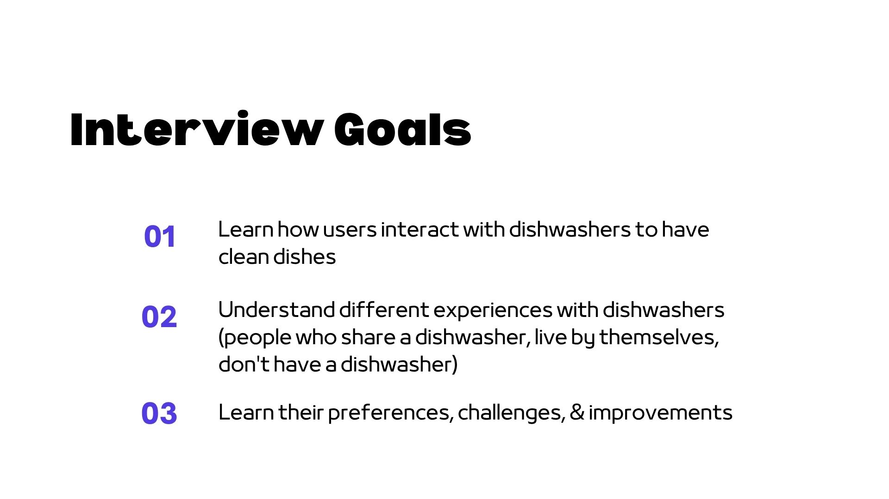
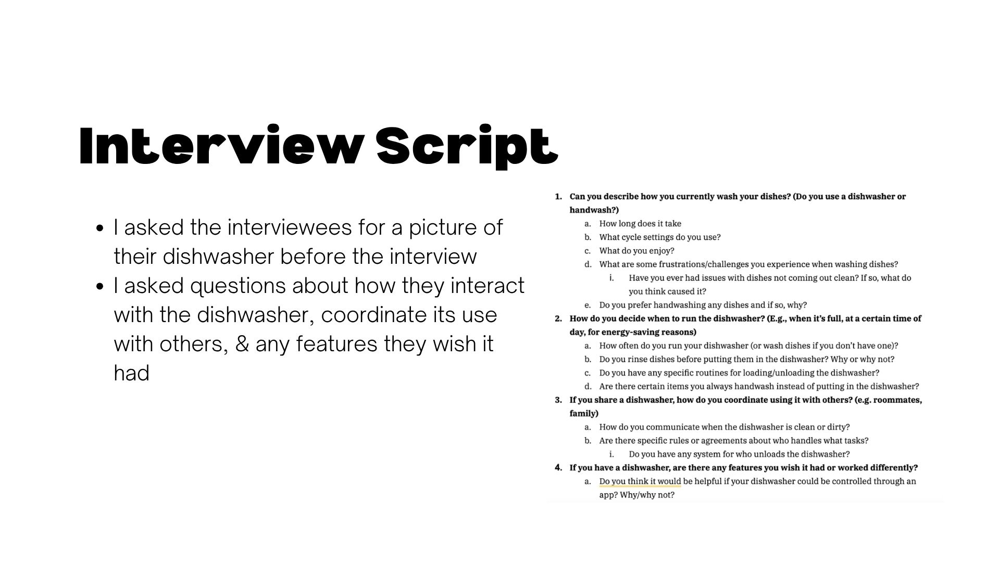
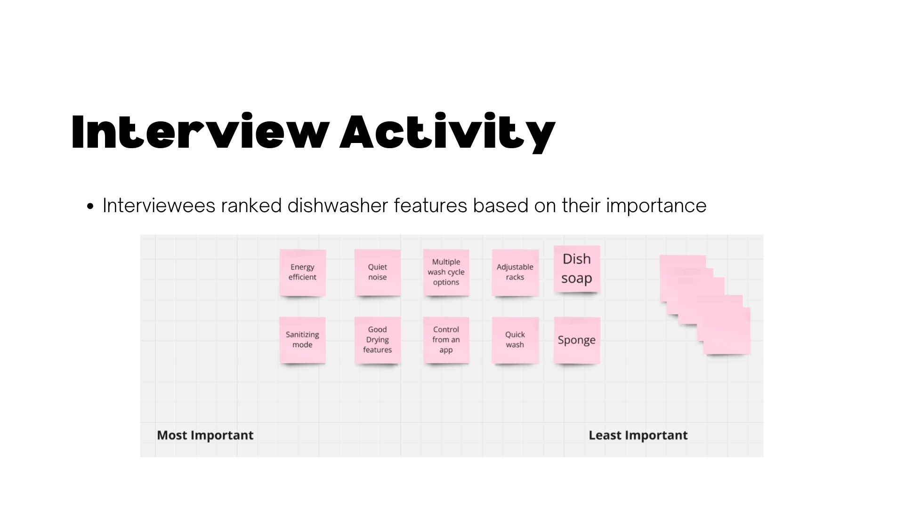
INTERVIEW THEMES
Key insights
After synthesizing my interviews, a few clear themes emerged:
-
Shared use tends to create invisible friction – In households with multiple people, there was no reliable way to know if the dishwasher had already been run, or if it was clean vs. dirty. One family described repeatedly opening it just to check, and being annoyed to find it full of clean dishes nobody had unloaded yet.
-
People run it and forget about it – Several interviewees run their dishwasher at night or before leaving, but have no way of checking in on it remotely or getting notified when it's actually done.
CONCEPT
Elevator Pitch
For college students living with roommates who want to make managing the dishwasher in shared households simple, Dishwasher Connect is a mobile dishwasher solution that provides shared digital control and live dishwasher updates. Unlike other smart device apps like Amazon Alexa and Google Home, Dishwasher Connect is focused on making shared living spaces more comfortable.
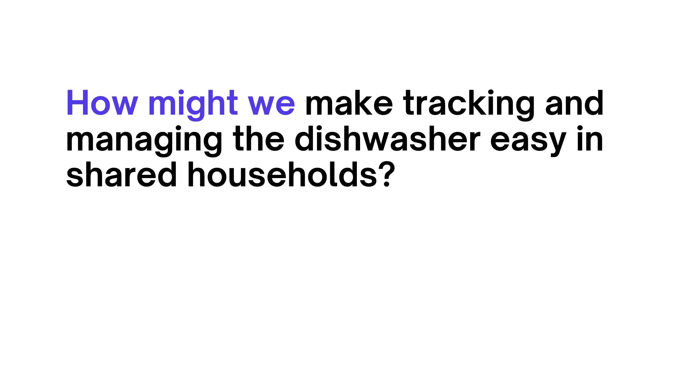
Design Process
Key Features
Based on my research, I decided on 3 main features to prioritize when designing the app:
-
Shared digital control – connecting a dishwasher and adding roommates so everyone has visibility
-
Remote control – starting/checking the dishwasher from anywhere via app
-
Status updates – notifications and live progress updates so nobody has to guess

SITEMAP
Digital Sitemap
I mapped out the app's structure across three main sections: Home, Machine Controls, and Profile. This helped plan out navigation before jumping into wireframes.
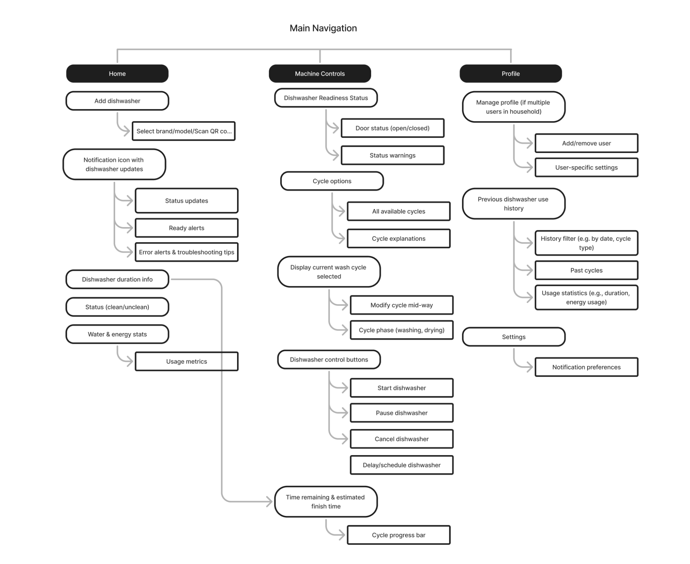
TASK FLOWS
Mapping the Experience
I created task flows for two of the core actions in the app: adding a dishwasher for the first time and starting a wash cycle. This helped me think through every screen and decision point a user would hit along the way.
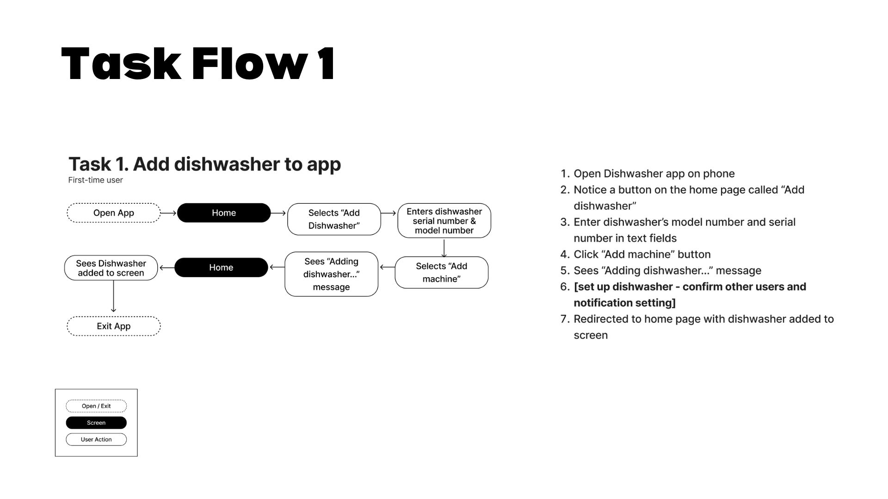
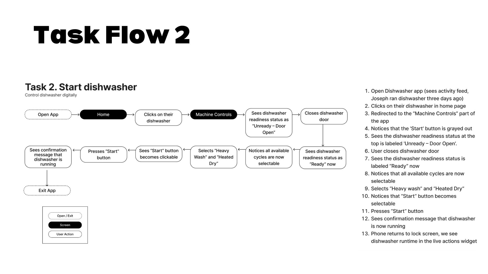
PATTERN STUDY
Studying an existing app
Before sketching my own screens, I first traced out wireframes based on Lyft's app as a way to study how a well-established app structures its navigation and layout. I focused on things like tab bars, information hierarchy, and how much content exists on each screen.

SKETCHES
Paper Wireframes
Using that as a reference point, I sketched paper wireframes for Dishwasher Connect's core screens, focusing on structure and flow instead of visual details.

Low-Fidelity Wireframes
Low-Fidelity Designs
I then translated those sketches into digital low-fi wireframes for the core flows - adding a dishwasher, viewing the dashboard, and getting notifications.
 TESTING
TESTING
Usability Testing
Using my low-fidelity prototype, I ran an in-person usability test with a participant. I gave them the task of adding a dishwasher and starting a Standard wash cycle. Below is the task and a few takeaways based on the feedback I received.
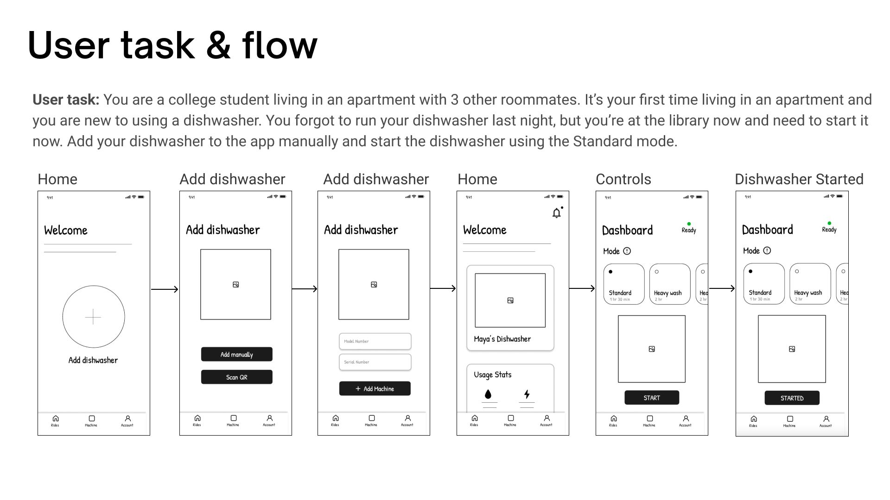
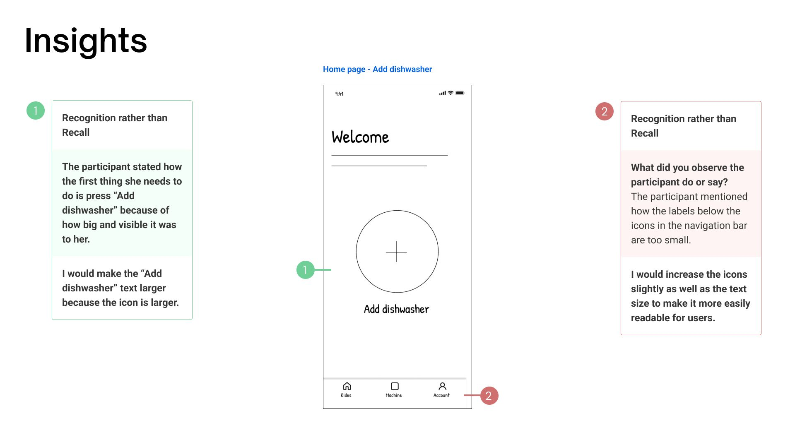
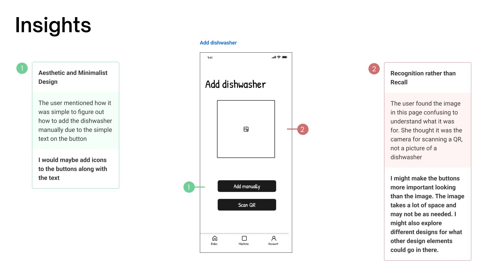
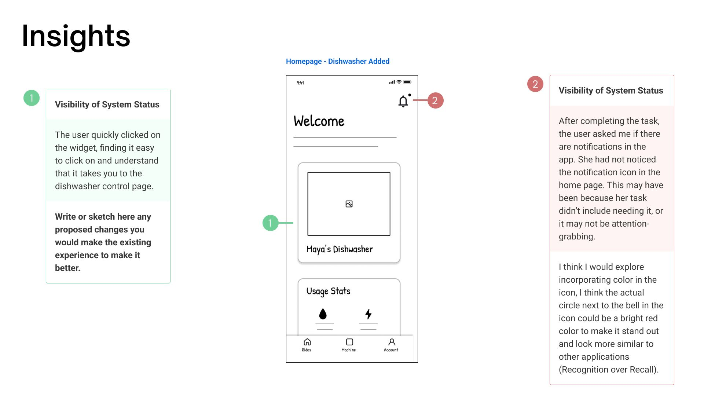
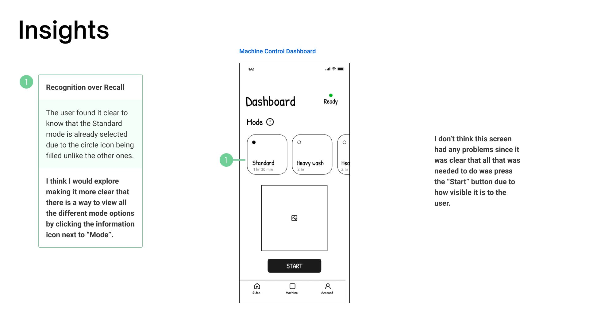
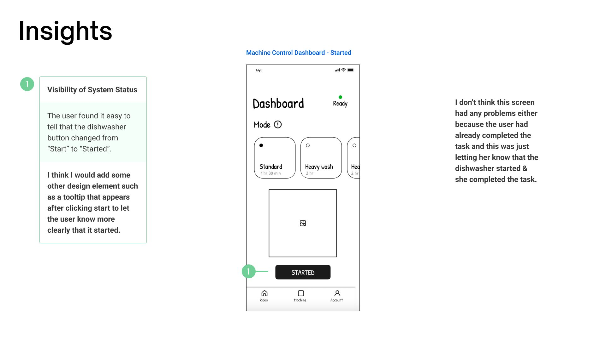
Visual Design Research
Studying type & color
As part of my visual design process, I decided to break down Lyft's typography and color system. I looked at font pairings, sizing, and how they used color to signal hierarchy and brand identity. I ended up applying this same type and color system to Dishwasher Connect, using it as the visual foundation for the final prototype.
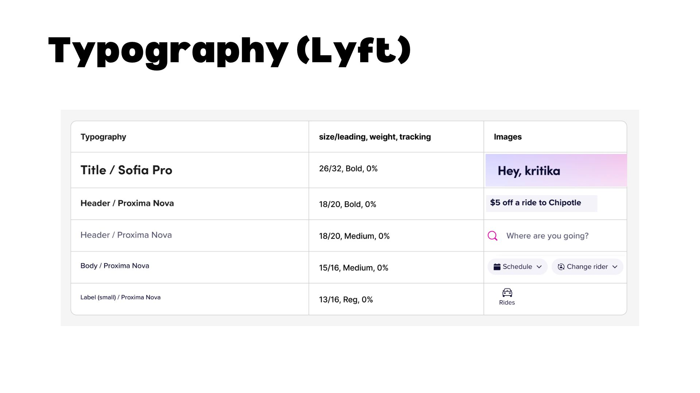
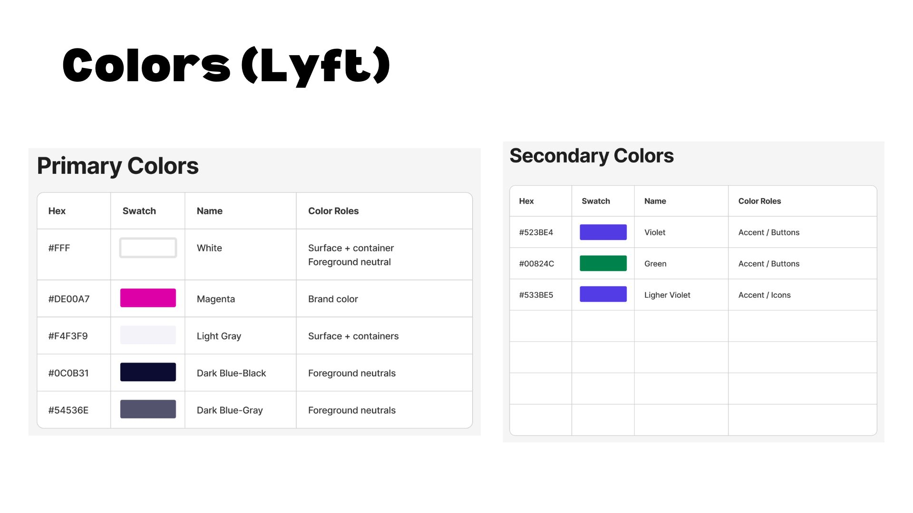
High-Fidelity Prototype
PROTOTYPE
Prototype Walk-Through
After incorporating my usability testing insights, I moved into visual design and built out the final hi-fi prototype in Figma.
Takeaways
Final Thoughts
This project pushed me to think about how you design for shared use, not just individual use, since a lot of the real problems weren't about the dishwasher's functionality, but about communication/visibility between people. If I had more time, I'd want to develop a more original visual identity instead of leaning on Lyft's design language as a starting point, and run a second usability testing session that focused specifically on the roommate-coordination features, since my first test only covered the solo onboarding/start-cycle flows.
wanna see my other projects? explore all projects →